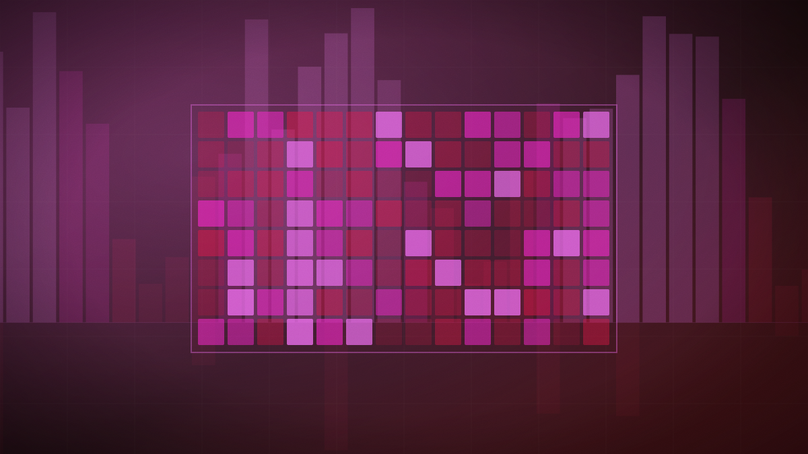

IBM ships Granite 4.2, an Apache-licensed reasoning model built for local deployment
The 3B, 8B and 30B models add a thinking-mode toggle and a 512K-token context window, with the larger two trained further on agentic software-engineering tasks.

Original cover art, generated for this story. THE VISSION does not republish third-party press imagery.
- IBM released Granite 4.2 in three sizes — 3B, 8B and 30B parameters — as dense, decoder-only reasoning models with a switchable thinking and non-thinking mode.
- Context windows extend to 512K tokens; the 8B and 30B variants received additional agentic reinforcement learning in software engineering, terminal operations and web search.
- On SWE-Bench Verified the 8B model scores 47.67% and the 30B scores 57.00%; on AIME25 the models score 78.33%, 86.67% and 89.17% by size.
- All three are released under the Apache 2.0 license with FP8, FP4 and GGUF quantizations available for local deployment.
IBM has released Granite 4.2, its first family of dense, decoder-only reasoning models, in three sizes — 3B, 8B and 30B parameters — sharing identical architecture but differing in training depth. All three support a switchable thinking and non-thinking mode, letting a simpler query skip the reasoning overhead a harder one needs, and extend context windows to 512K tokens.
The larger two models received additional agentic reinforcement learning specifically in software engineering, terminal operations and web search, on top of pre-training across roughly 15 trillion tokens and supervised fine-tuning on about 100 billion tokens covering reasoning, coding and tool use. On SWE-Bench Verified the 8B model scores 47.67% and the 30B scores 57.00%; on AIME25 the three sizes score 78.33%, 86.67% and 89.17% respectively.
All three are released under the Apache 2.0 license, with FP8, FP4 and GGUF quantizations available specifically to support local deployment rather than requiring a hosted API — the explicit target of the release given rising interest in running capable models on local hardware.
A 30B model clearing 57% on SWE-Bench Verified under an Apache 2.0 license, quantized down to FP4 for local GPUs, changes the calculus for teams that want agentic coding capability without sending code to a third-party API — a real constraint for regulated industries and anyone under a strict no-external-inference policy. IBM entering this specific niche, rather than competing purely on frontier benchmarks, signals it is targeting enterprise deployment constraints ahead of raw capability leadership.